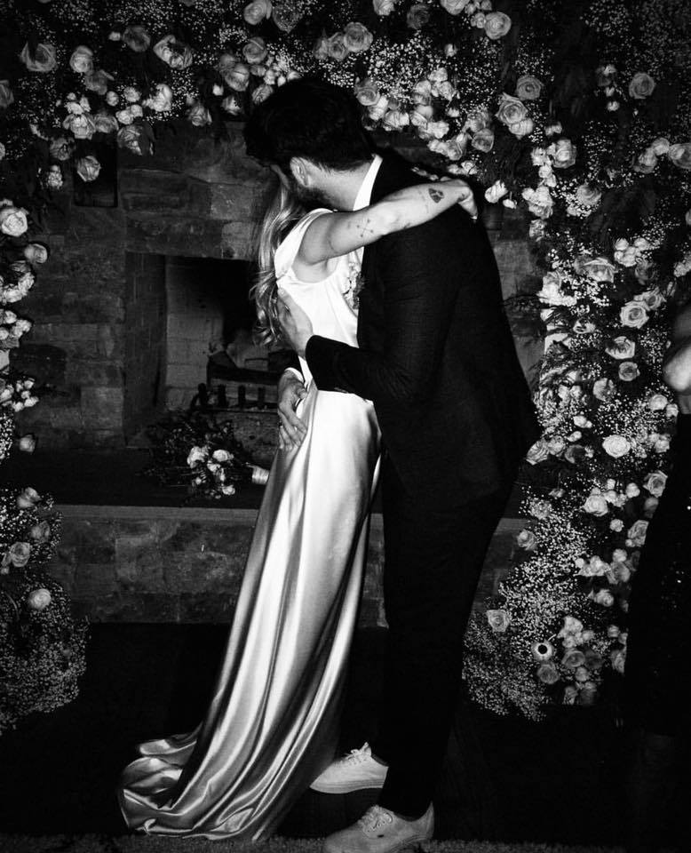

Miley Cyrus recupera a Hanna Montana y las redes se revolucionan
Miley Cyrus ha decidido recuperar a Hannah Montana, en una serie de fotografías y vídeos que han revolucionado las redes sociales y han hecho del personaje que interpretó durante cinco años tendencia mundial en Twitter. Con una peluca con la que recupera la imagen que lució entre 2006 y 2011 en la serie de Disney Channel, la cantante ha colgado en sus perfiles de Twitter e Instagram imágenes de su personaje más famoso, que acaba de cumplir 13 años. El pasado domingo se cumplió el aniversario de la emisión del episodio piloto de la serie en Estados Unidos, lo que Cyrus recordó con una antigua imagen de aquella época, en la que solo tenía 13 años.
Pero en las última horas ha decidido volverse a vestir como Hannah Montana y grabarse cantando mientras conduce un coche, lo que ha desatado la locura de los fans. Los vídeos cuentan las visualizaciones por millones y los seguidores de Cyrus no han tardado en empezar a especular con un posible regreso de la serie que la lanzó a la fama, aunque de momento la cantante no ha dicho nada al respecto.
La boda secreta de Miley Cyrus y Liam Hemsworth
Miley Cyrus y Liam Hemsworth ya son marido y mujer. La cantante de 26 años que diera vida a Hannah Montana en la pequeña pantalla ha confirmado a través de las redes sociales su boda con el hermano de Chris Hemsworth (el marido de Elsa Pataky), de 28, publicando en su cuenta de Instagram unas románticas fotografías en blanco y negro del enlace.
En las imágenes, la exchica Disney luce un vestido blanco de escote barco y de raso y Hemsworth, un traje negro y corbata. "Diez años después", ha escrito la intérprete de 'Malibú' en una de las publicaciones, en la que también ha revelado la fecha de la boda, 23.12.18, que se habría celebrado en la mansión de 650 metros cuadrados que la cantante tiene en Nashville.
Miley Cyrus y Liam Hemsworth ya son marido y mujer. La cantante de 26 años que diera vida a Hannah Montana en la pequeña pantalla ha confirmado a través de las redes sociales su boda con el hermano de Chris Hemsworth (el marido de Elsa Pataky), de 28, publicando en su cuenta de Instagram unas románticas fotografías en blanco y negro del enlace.
En las imágenes, la exchica Disney luce un vestido blanco de escote barco y de raso y Hemsworth, un traje negro y corbata. "Diez años después", ha escrito la intérprete de 'Malibú' en una de las publicaciones, en la que también ha revelado la fecha de la boda, 23.12.18, que se habría celebrado en la mansión de 650 metros cuadrados que la cantante tiene en Nashville.

La pareja se conoció en el rodaje de 'La última canción', película que ambos protagonizaban, y anunciaron su compromiso en el 2012. Pero unos meses después se confirmó su ruptura hasta que, en el 2016, volvieron a salir juntos.